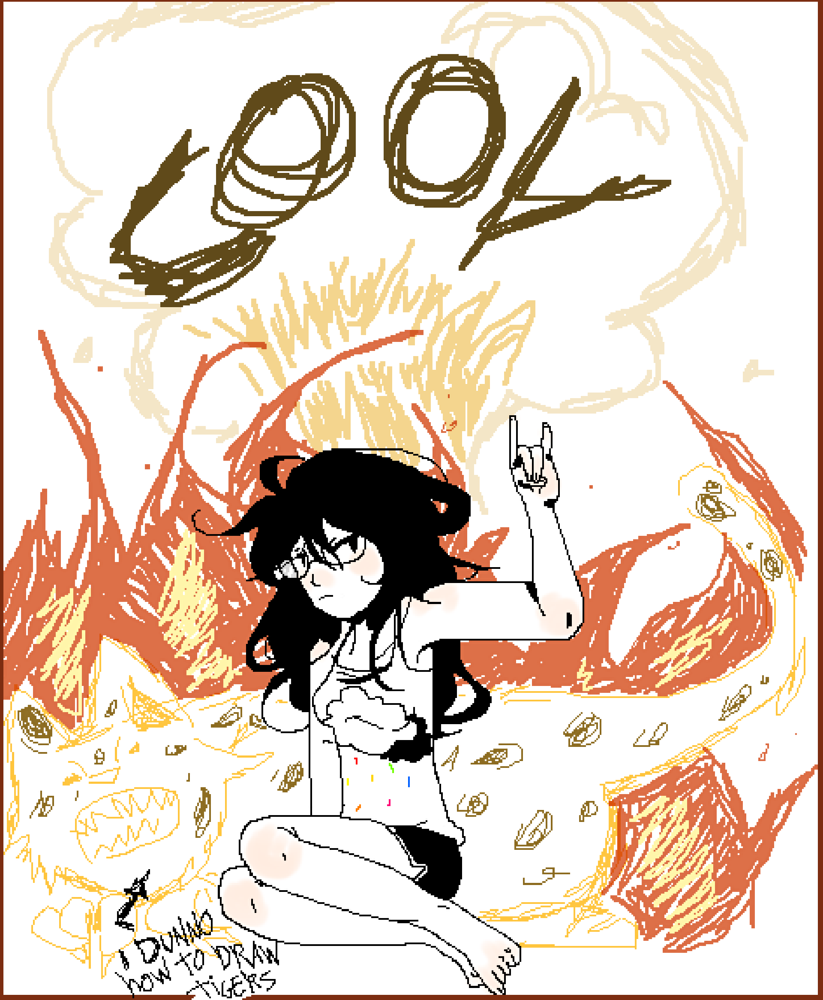

rads Today at 8:26 PM
Heya! I'm rads and i'm a digital artist and kind - of - writer.
svvord Today at 8:26 PM
we love artists here
about since when have you been on the internet?
rads Today at 8:30 PM
I want to say 2007-2008 but i have a feeling it may be even earlier than that, i learned how to read when i was really young so id be fussing around mspaint for hours on end while looking at pictures of my favorite cartoon characters lol
svvord Today at 8:31 PM
that's the life tbh, i want to go back.
rads Today at 8:34 PM
A simpler time in the internet
svvord Today at 8:35 PM
what were your first social experiences on the internet like?
rads Today at 8:38 PM
Dressup dolls game hubs with little forums (i didnt participate in those so much as peek over the topics), Neopets, and pokemon fansites were pretty much my roaming range, i even had an unused MSN account that only ever got to share messages with my mom
This was still on the period where adults would warn you about strangers online so even when i started to peek at flash files on newgrounds i struggled to engage, and mostly lurked on creator and user pages up until i was like... 9? I think
 svvord Today at 8:41 PM
what changed for you then?
or maybe changed about the internet?
rads Today at 8:45 PM
It was a mix between my family moving around for the second time since i was born and me losing contact with my old schoolfriends, and social games like Habbo Hotel and less known variants cropping up all over the place
They looked really shiny. For someone on the cusp of being 10 years old it was like oh yeah, this is neopet for teens
svvord Today at 8:46 PM
The Cooler Neopets
rads Today at 8:46 PM
"In this one you can have pool parties!"
svvord Today at 8:46 PM
oh wow
did you talk to other kids there more?
rads Today at 8:48 PM
I suspect so yeah i think a lot of us were playing an extended roleplay game of pretending to be older than we really were
Most claiming to be fifteen years old at the time would then happily engage with you for hours on erudite topics like, ben 10, so youd rarely get discovered
svvord Today at 8:50 PM
all that googling cartoon characters really starting to pay off i bet
rads Today at 8:50 PM
That was the tutorial stage i had to beat to join society
Very important
svvord Today at 8:51 PM
how would you say your social interactions have grown online?
rads Today at 9:00 PM
I think learning to speak english opened up a whole half of the web that wasn't disponible to me before, even when it was still rusty and id have to google translate file names before downloading videogame roms. Casual stuff like social games would get boring quick or become repetitive (besides walking around and paying to own pretty things, there wasnt much content to the minigames) and searching for anything related to media i enjoyed would deposit me on english speaking websites if i wanted to see new things
I went from barely logging into Orkut (i think this social media died off by now? It was a brazillian alternative to facebook when that was still in its infancy) to look at family pictures to spending HOURS looking through any and all fandom related sites and fanblogs i could find
svvord Today at 9:03 PM
was a lot of the media you were interested in primarily based in english?
rads Today at 9:06 PM
Yeah! Brazillian entertainment is very ... adult oriented? even when we're talking about national shows for kids the pull ends up being telenovela-style drama between the teachers or parent figures
To make up for that most channels imported their cartoons, preteen series and animes to be dubbed and shown in matinee programs or afternoon blocks for kids
Here you either study in the morning or in the afternoon, so the matinees were for kids who woke up at 11 to get ready for school while the afternoon blocks were for the kids who studied in the morning and spent the rest of the day dicking around in the house
The end result was that most stuff i got into had its news written up in a totally different language, but when the reruns refuse to show you new season episodes you have to get a little creative
svvord Today at 9:12 PM
that's really interesting that more of the entertainment was towards adults
do you think your early language barrier effect how you interacted with/presented yourself to others in the english online spaces?
rads Today at 9:16 PM
It definitely did
I'd try to make my digital footprint smaller, if that makes sense? I still couldn't understand a good 60% of the complex language being utilized and it was just made worse by all sorts of internetspeak and abbreviations that depended on cultural knowledge
I got the habit of lurking around and absorbing as much information as i could but only inserting myself into conversations to give brief feedback in the form of compliments
It was a little easier to bullshit spanish so id halve my time looking for links and threads and news in latin fanclubs and watch how they bullshitted english in turn
svvord Today at 9:23 PM
you speak Portuguese, right?
rads Today at 9:24 PM
Yep! Brazillian portuguese, it's different from the one they speak in europe
svvord Today at 9:27 PM
Were there a lot of spaces online that used it? Or what were those spaces like (other than Orkut I guess).
rads Today at 9:30 PM
Early 2010's brazillian internet feels very empty to me, partly because not a lot of people saw a "use" for it. Phones were huge, we love phones, but pre-facebook you'd struggle to find a computer in most modest households. It was an expensive and clunky thing to own that didn't come with localized instructions
Even printing stuff was reserved to "Xerox places" and a lot of people made money on mounting like 10 pcs on their garage and charging 1 real per hour of use
So you'd see a lot of websites for brands and newspapers but social stuff wasn't popularized or accessible, at least not in the way i see people talk about livejournal or myspace as part of their teen years
I got my first phone when i was 10 years old and at that point (2011~ onwards) is when the novelty of social media started to become a real hot topic, and i even found brazillian focused fanfic sites eventually - but as far as fanfics go, those are also often adult leaning
svvord Today at 9:38 PM
how would you say that's transformed to how you use the internet today?
rads Today at 9:41 PM
I think it taught me to read and research a lot, to the point that's still how i spend most of my time online
Fansites and fanclubs introduced me to community based fanart so i finally had an excuse to draw things with intent and for a public, which i still do to this day, and it's the stuff I'm primarily known for
Though now that im secure enough to hold a conversation ive moved from an expectator to an active actor who can directly interact with the things i enjoy and their creators
svvord Today at 9:47 PM
do you try to present yourself a particular way to other creators or communities online?
rads Today at 9:52 PM
Yeah! I'm a lot more polished than i am in real life, and i guess more aproachable? I like having the option to communicate thru text to express things more clearly
svvord Today at 9:53 PM
I definitely relate to that lol
Do you find large differences between the people you interact with online verses offline?
rads Today at 9:59 PM
IRL most of my contacts can be summed up with school related classmates or family, and i end up losing contact with people when/if i move places because a lot of the appeal in those acquaintances is being able to hang out instead of shared interests
On the flipside theres a few people online ive known for years and whom ive seen grow from place to place, most of which are artists themselves or into some sort of creative hobby. By and large, they're often part of the lgbt community one way or another too svvord Today at 10:05 PM
How would you say being a part of the LGBT community effected the difference between your online and offline identities?
rads Today at 10:10 PM
It helped a lot to have somewhere to discuss these sort of personal and touchy topics that wasn't out in the open, i think i got very lucky choosing the communities i visited and was able to catch the development of a lot of hubs focused on exploring gay characters and non-cishet identities. If it wasn't for that, i doubt id even be the same person i am today, online and offline. I still havent found anything quite like that in real life, if you aren't from big cities or capitals the gay part of the population is like... hiding under rocks. Out of necessity more than anything
The "Everyone is a stranger" warning ends up working in your favour once you realize in the internet, nobody knows who you are, so if you claim to be a boy you're a boy, and if you're gay it's not like anybody can do anything about it
svvord Today at 10:20 PM
It is nice, to not have to convince people of things like that.
It's a relief!
svvord Today at 10:22 PM
Was there anything else you wanted to talk about?
rads Today at 10:25 PM
Not much tbh... i guess just that if the pandemic months have proven anything is how much digital support and socialization can go a long way to make sure you don't go stir crazy LOL
svvord Today at 10:26 PM
AH yeah. It's a ride seeing "irl" people adapt to online socialization more.
rads Today at 10:29 PM
Hopefully this settles the age old dispute on whether or not internet friends count as "real" friendship, i think that one is way past its expiration date
continue scrolling